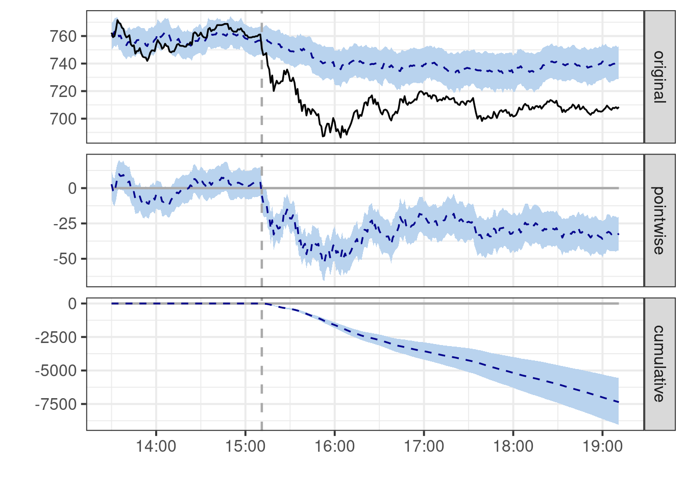
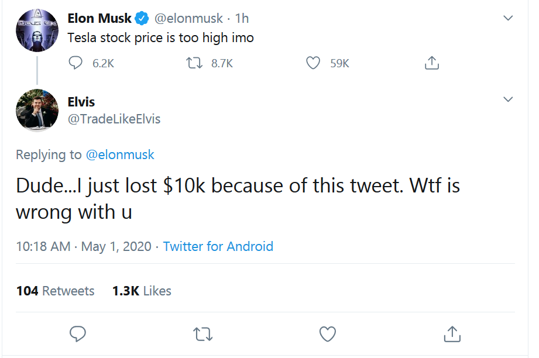

![]()

At 2020-05-01 15:11:26 UTC Elon Musk tweeted

and Tesla stock started tanking. I find this absolutely hilarious, especially since he did this a while back and got fined like several million dollars for tinkering with market or something illegal like that.
Anyway, I asked myself: can we causally attribute Tesla tanking stock price to this tweet?
The answer is yes, yes, we absolutely can. In the following I use a synthetic control approach to estimate the causal impact of Musk’s tweet on the Tesla stock price (God I hate that I just wrote that sentence). You can read more about this approach in Brodersen et al. (2015).
I used the S&P500 as my synthetic control and pull 1-minute resolution ticker data using Tiingo with the riingo package, then blindly shoved the data into CausalImpact. We get the following:
In the first panel, the blue is Tesla stock price as predicted by the S&P 500 based on a Bayesian state space model, and the black is the actual Tesla stock price. Elon tweets at the dashed vertical line. You can see that before the tweet, Tesla stock prices are well-predicted by the S&P 500, and afterwards, the Tesla stock drops to prices lower than predicted based on the S&P 500. The current best estimate is that the tweet is responsible for about a $40 drop in the price of Tesla, although there is clearly a fair amount of associated uncertainty in this.
Of course, you probably shouldn’t believe these estimates since I didn’t generate them with neural net.
Anyway, I’m gonna go finish a topology takehome now, and try to tank my grade by less than Elon tanked his stock. In the meantime, you should all read Brodersen et al. (2015), it’s great. Everyone else, continue shitposting. Well, unless you’re Elon, in which case, maybe don’t.
Update: Fabian Dablander has a nice followup post about Elon’s tweets and Dogecoin prices that discusses synthetic control in more detail.
References
Brodersen, Kay H., Fabian Gallusser, Jim Koehler, Nicolas Remy, and Steven L. Scott. 2015. “Inferring Causal Impact Using Bayesian Structural Time-Series Models.” The Annals of Applied Statistics 9 (1): 247–74. https://doi.org/10.1214/14-AOAS788.